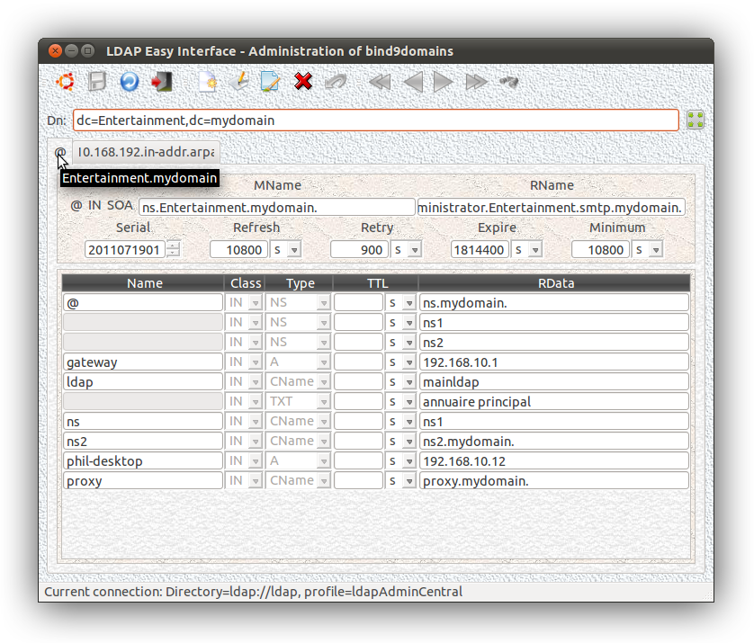
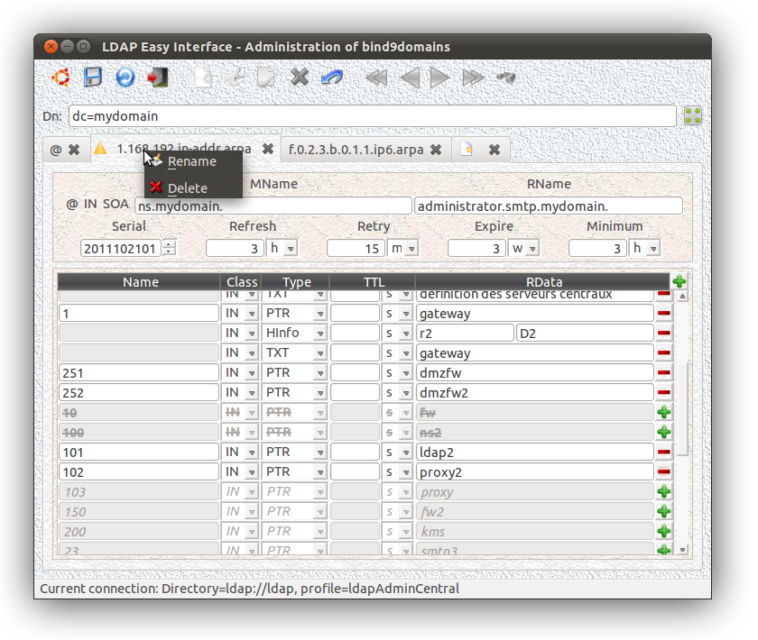

Input mask:

This plugin is automaticaly called (when
available - "${PATH}") from the interface "
domainFrontend" which groups the different tools management of the domains: "
dc" ...
Here is an example of the DNS zones definitions ("
LDIF" format) of the LDAP directory configurator...
Trick: after a possibly erroneous change (which can occur when using the mouse wheel to scroll... ;-), double-clik "-" to restore the original values of the possibly deteriorated record(s)...

The grayed definitions (not barred) match the RRs defined
in the DNS zone (direct) and not yet existing in the "
arpa" corresponding zone (here: "
1.168.192.IN-ARPA")...
They are therefore suggested to the validation and can be integrated
into the definition of the reverse zone with a single click on the icon
"
+".
Driver for the file update "named.conf":
Here is the setup interface for "
named.conf":
doNamedConf. The code is shared with
getHostName. It can be used as follow:
getHostName --namedConf
or:
ln -s /usr/local/bin/getHostName /usr/local/bin/doNamedConf ; doNamedConf
This program allows the automatic generation (
either triggered by "
cron",
either at start-up procedures of the destination system) of the "
BIND" configuration file
(ex.: "
/etc/named.conf") for the current domain.
Example for shell start (/etc/init.d/) for each of the intranet servers to administrate:
...
# previous setting...
...
NAMEDCONFFILE="/etc/named.conf"
TMP=/tmp/.doNamedConf.$$
<$NAMEDCONFFILE awk '{if ($0 ~ /@\(#)LdapEasyInterface - bind9domain -/) bool=1; if (!bool) print $0}' >$TMP
if [ -s $NAMEDCONFFILE ] ; then
2>/dev/null ${BIN}/getHostName --namedConf >>$TMP
<$NAMEDCONFFILE awk '{if ($0 ~ /@\(#)LdapEasyInterface - End -/) bool=1; if (!bool) print $0}' >>$TMP
fi
cat <$TMP >$NAMEDCONFFILE
rm -f $TMP
...
# next setting...
...
Insert first the following two lines in the file; "/etc/named.conf" (where wanted):
...
# @(#)LdapEasyInterface - bind9domain - Global Settings:
# @(#)LdapEasyInterface - End -
...
(
The generated parameters will be inserted between this two lines)
Zone declaration example, for "named.conf":
zone "domain" IN {
type master;
database "ldap
ldap://ldap/ou=bind9domain,dc=domain????!bindname=cn=nssldap%2cou=applications%2cdc=mydomain,!x-bindpw=mydomain
172800";
allow-update { none; };
};
zone "1.168.192.in-addr.arpa" IN {
type master;
database "ldap
ldap://ldap/ou=bind9domain,dc=mydomain????!bindname=cn=nssldap%2cou=applications%2cdc=mydomain,!x-bindpw=mydomain
172800";
allow-update { none; };
};
Example of setting for the LDAP DNS service "BIND9":
http://howto-linux.tbugier.fr.eu.org/wiki/index.php/DNS-LDAP_-_param%C3%A9trer_le_serveur_Bind9_avec_LDAP
Trick:
The patched LDAP-DNS is only used to forward the zone definitions to
the secondary servers that they will respond to user queries (the
patched Bind9 forfeits some important optimization features and is not
adapted to directly serve the user queries...).
The latest version 1.2 (
20111028)
here...
To use with the latest version of "
ldapcppei", "
connectForm" and "
frontend"...
After compiling:
me@home:~$ mv libbind9domain.so /usr/local/bin/
me@home:~$ frontend --plugin libbind9domain.so
or:
me@home:~$ mv libbind9domain.so /usr/local/bin/
me@home:~$ ln [-s] /usr/local/bin/frontend /usr/local/bin/bind9DomainFrontend
me@home:~$ bind9DomainFrontend
or:
me@home:~$ mv libbind9domain.so /usr/local/bin/
me@home:~$ domainFrontend
Tested on
11380 entries of
136 domains ("
dc"),
160 DNS zones ("
zoneName") and
2954 definitions ("
relativeDomainName").
Mean times to refresh the display on a domain of 10 zones and
596 definitions (version:
Ubuntu 11.10 amd64 Unity - Intel Core CPU E8400 @ 3.00GHz * 2 - RAM 4Go):
-
10 secondes without the option "
Customized display",
-
15 secondes with the option "
Customized display"...
Writing time of the LDAP database for
50% of modified definitions: 20s - 10s (for refresh display) ~=
10 secondes.